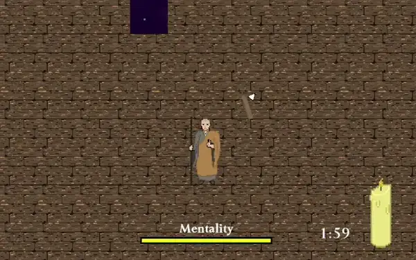

Back
Game Jam #1
Links: itch.io, GitHub
For this project I developed a game within 4 days. This was part of the "Jame Gam #36" game jam hosted on itch.io, with constraints "Another World" as the theme, and requiring a candle to play an important role in the game.
Using Unity and C# I made a top-down 2D action game, taking place in Sengoku period Japan where the player controls a battle-hardened soldier turned monk, confronting his past in his mental world during meditation.
With the time constraints and lack of experience in game development, I had to use creative solutions to make a fun and engaging user experience. One of the largest struggles I faced centred around understanding how to make the game fun for the user, not just in the game's mechanics but also in the smaller details. This meant immersing the user into the game by including tactile sounds for the user to feel their actions, as well as creating VFX that connect the player with the player character's identity and with the world. For example, the player character was a battle-hardened soldier, so in order to give the player the same heightened fighting ability and senses the character would have, the character's the enemies gain a red outline before they attack, so the player can more easily notice and react.
